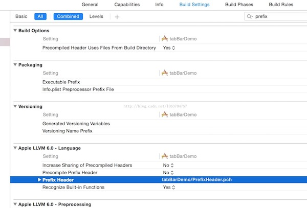

iOS添加pch预编译文件
张茨一飞 : JUN 30, 2017什么是pch文件？
pch是一个以.pch作为后缀的一个预编译文件，主要用来存放程序中比较稳定的，不会被经常修改的代码
pch文件的发展史
在Xcode6之前，创建一个新的项目之后，会自动在Supporting files文件夹下面创建一个“工程名-Prefix.pch”文件，Xcode6之后，可能是因为程序员把大量的宏定义和头文件放在pch中，导致编译时间过长，苹果去掉它，可能是为了加快编译速度，提高用户体验。
pch文件的创建
1.右键组名，New File -> iOS -> other选择PCH文件
2.在Build Settings里面找到Prefix Header
3.添加PCH文件，项目名/****.pch.
也可以是：$(SRCROOT)/项目名/***.pch